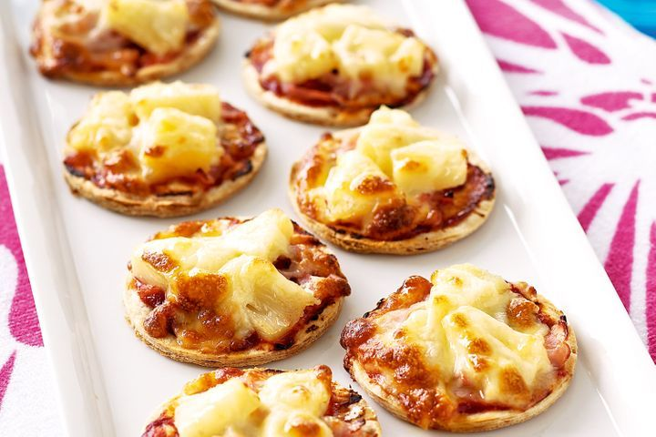

Mini ham and pineapple pizzas

Ingredients
- 30cm pizza base
- 1 tbsp tomato paste
- 35g shaved leg ham, thinly sliced
- 225g can pineapple pieces in natural juice, drained
- 1/3 cup grated mozzarella cheese
Steps:
- Preheat oven to 200°C/180°C fan-forced. Lightly grease a large baking tray. Using a 7cm-round cutter, cut 8 rounds from pizza base. Place rounds on prepared tray.
- Spread each round with 1/2 teaspoon tomato paste. Top with ham, pineapple and cheese. Bake for 10 minutes or until cheese has melted and base is crisp.
Home